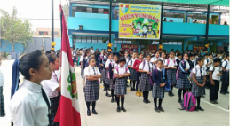

"INNOVANDO CON LAS TIC EN LA I.E. N° 1203 MANYLSA"
Estimados docentes de la I.E. N° 1203 Manylsa, este espacio esta diseñado para invitar a integrar las diversas herramientas que nos ofrece la web 2.0, la cual puede ayudar a innovar su desempeño en el aula, para mejorar el aprendizaje de sus estudiantes, ya que en el mundo en el que nos desenvolvemos estamos rodeados de conocimiento e información del cual debemos ir de la mano. Aquí encontrara información de algunas herramientas; los invito a poner en práctica cada una de ellas.
Historia de la creación de la I.E
La institución educativa N° 1203 de la cooperación Manylsa(I.E N°1203) que se encuentra ubicada en el distrito de Ate, departamento de Lima, fue creado mediante resolución del directorial de N° 1157 el 17 de mayo de 1976. La comunidad de Manilsa, ya que no contaba con agua desagüe ni luz, se creó de una forma accidental. El Ministerio de Educación publicó en un diario limeño que se requeriría a La donación de un terreno para construir el local del colegio educativo; es entonces, la población se ofreció donar un terreno de 4000 m2.Comenzando a funcionar con seis secciones de primero a sexto grado ubicándose las primeras aulas en la vivienda de los socios de la cooperativa. El director Víctor Medina fue director de su fundación de 1976 hasta 1978 a él le tocó las dificultades más grandes de dar inicio su labor de cero con carencia de aulas y materiales. En 1983 A 1987 administró la directora Olga la rosa de Sotelo. El sistema educativo sufre una contrarreforma denominándose nuestra institución escuela primaria de menores 1203. Pasándose después a llamar al centro educativo N° 1203 Ricardo Palma en 1877. Después en 1989 se buscó la independencia del nivel secundario con el nivel primario ya que administrar los dos niveles ubicados en lugares diferentes dificultaba realizar una buena labor. En 1900 en 2003 el director Mario evangelista mata reorganizó el colegio educativo adaptándole un nuevo sistema incrementando las aulas de 12 a 20 remodelando en su totalidad las aulas construyendo dos módulos de servicio higiénico dejando construido el escenario que fue considerado uno de los mejores por su amplitud en toda Santa Clara a partir de julio del 2003 llegó a nuestra institución el director Ignacio Cabrera. Que en su gestión se remodeló el patio de honor se culminó con dos aulas en el segundo piso.A partir del año 2011 la profesora Rosa Betty cedrón con 29 años, se inauguraron las aulas de innovación y de computación, se implementaron la Biblioteca Escolar, se levantó al cerco periférico que estaba construyendo constituyendo un peligro para los alumnos el autoritarismo modernizado.En la actualidad se cuenta con tres pabellones 12 aulas y 24 secciones en dos turnos cerca de 850 alumnos 24 profesores tres personales de servicio contando con talleres extracurriculares de inglés y de computación.